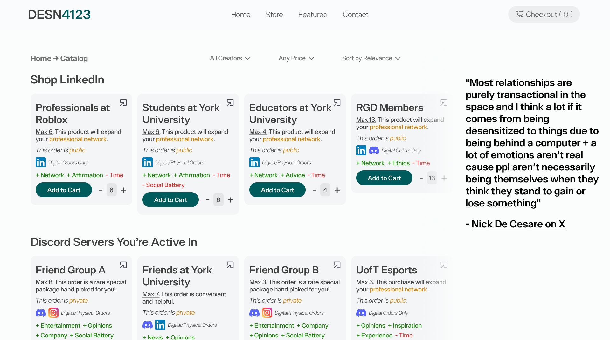

The Transactional Values of Digital Social Interactions.
In my visualization of social media networks, I've mapped connections in terms of how I benefit from them and what they cost.
DESN4123, Richard Lau
In my social networks today, I’ve found that my interactions with social media have some sort of transactionality from both parties. This is not to say I have friends on social media purely because I get “likes” or “affirmation,” but to say that there are things I give and receive from online connections.
In an ‘X’ reply (Formerly ‘Twitter’) to a post on streamer relationships and “real” friends, Nick De Cesare—an E-Sports League of Legends personality—discusses an essential point and reasoning behind why online social relationships are “purely interactional.” He states that online relationships are purely transactional due to the lack of physical interaction, and that people are not being their real selves when they’re in the mindset of gaining or losing something.
Yes that's the unfortunate reality. Most relationships are purely transactional in the space and I think a lot if it comes from being desensitized to things due to being behind a computer + a lot of emotions aren't real cause ppl aren't necessarily being themselves when they…
— LS (@LSXYZ9) July 27, 2025
As I reflect on my own mapping, I strongly identify with Nick De Cesare’s point. My network visualization highlights three key insights: the distinction between physical and online transactionality, patterns between close relationships and acquaintances, and my perspective on the costs and benefits of social media networks.

When I designed this “social network shopping site,” I divided my connections into two main platforms: LinkedIn and Discord. LinkedIn is dominated by design-related connections and interactions; I rarely used it before studying design, but it has become a tool for building professional networks and job prospects.
In the past, I cared mainly about close and casual relationships, which is what I used Discord for, and is what I still use today. But now in the present, I’ve created a professional version of myself.
An interesting analysis of Discord and LinkedIn reveals the numerous close relationships I have between them. In the comparisons between my Discord and LinkedIn visualizations, you’ll see how the majority of the LinkedIn Tree strays closer to the edge (acquaintances). In contrast, my Discord tree gravitates toward the center (closer relationships).
This difference in closeness also resonates with Nick De Cesare’s claim. On LinkedIn, I feel desensitized to my connections, deliberately detaching emotion and putting on a professional persona that could get me potential opportunities.

In the relationships where I have physical and online contact, I find myself receiving much more frequent interactions with social media posts in contrast to professional connections.
These more frequent interactions come from groups where I see myself receiving many psychological benefits. These benefits—Entertainment, Mental Health, Company, Social Battery, Opinions—come at a perceived cost of practically nothing but my time and attention.
The reason why it's like this is most likely because of the varying levels of trust. My online interactions feel as if they only exist for surface-level exchanges, whereas my physical/online connections carry a deeper sense of trust and mutual investment.
The online social networks I have generally have no perceived downside to them at all, which may seem like an unrealistic achievement, but when compared to my past “failed” relationships, it reveals that I eventually cut off the inefficient cost-value social relationships.
I think it is important to note that I don’t treat my friendships as transactions. In solely online connections like the LinkedIn ‘Roblox Recruiters,’ I only see them as a professional opportunity to get to a future job. I know and see them only for their value in what they could provide to me because I am desensitized to online connections.
In contrast, I have strong emotional feelings with my close friends; I do not see them for the benefits they provide, or rather, it’s because the benefits are more difficult to perceive. In any case, the benefits seem to come naturally with the relationship, rather than being why we connect.
Looking back on my cost-benefit ratios on social media posting and consumption, I realize that there was also another cost—my personality and sense of self. When I post on social media, I write in a tone that is not necessarily mine. I interacted with content to build a fake image that seems ideal to recruiters and hirers. I am not true to my actual voice online in fear of being seen as “too weird” or personal.
This mapping highlights the difference between transactional connections and genuine relationships. It suggests that all relationships have some sort of transactionality, which makes us question how authentic our online relationships are and how we are benefiting/benefited from others.
In conclusion, many professional online identities—mine included—rarely feel fully authentic and are often shaped by perceived transactions. I believe that truly 'real' relationships come from genuine connection, not from thinking about what we can gain from them.
References
I have not used any AI tools or technologies in the project.
LS [@LSXYZ9]. (2023, September 25). Yes that’s the unfortunate reality. Most relationships are purely transactional in the space and I think a lot if it comes from being desensitized … [Tweet]. X (formerly Twitter). https://x.com/LSXYZ9/status/1949592237408698849